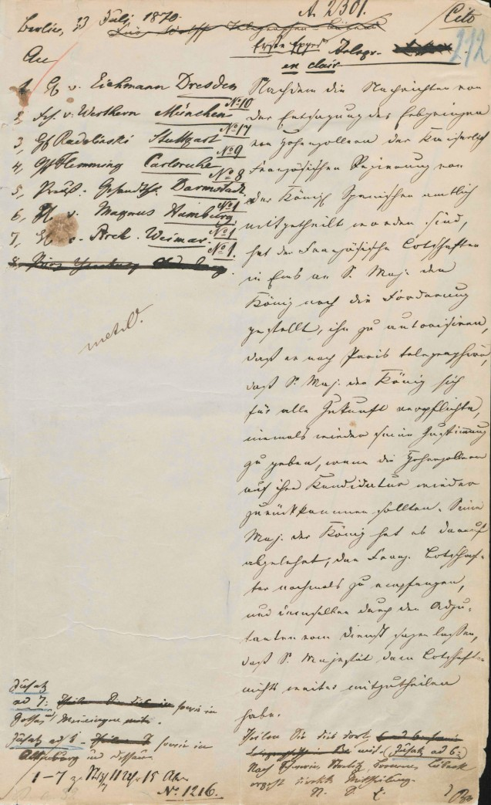
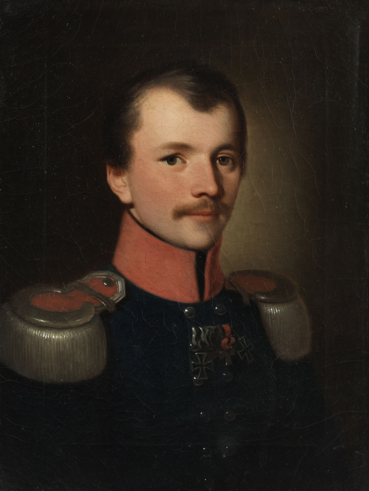
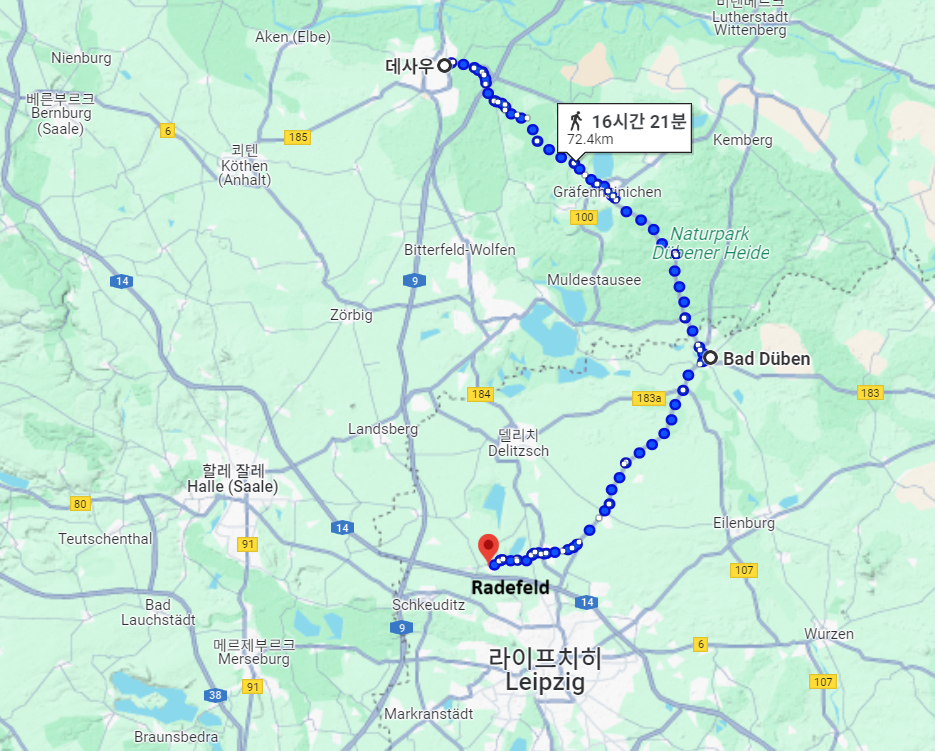
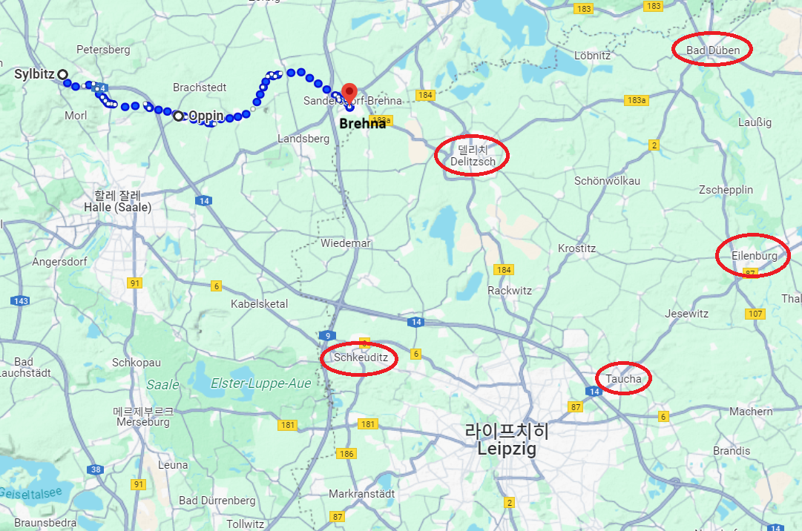
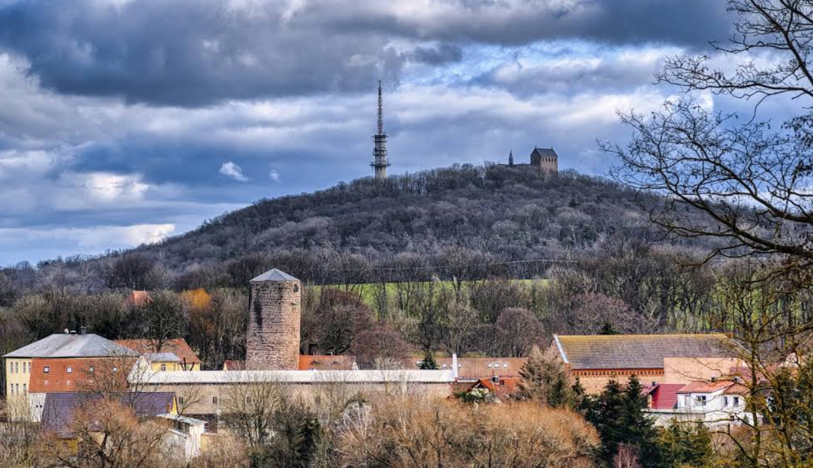

라이프치히 전투 (9) - 딴 생각하는 베르나도트
게시: 2025-07-21T06:30:08+09:00
지난 편에서 보셨듯이, 블뤼허가 측면 걱정 없이 라이프치히로 진격하기 위해서는 베르나도트의 협동 작전이 필수적이었습니다. 그 때문에, 자존심 강한 블뤼허가 거의 애걸복걸하는 수준의 편지를 보내 베르나도트에게 아일렌부르크로 기병대를 진격 시킬 것인지 알려만 달라고 부탁했지요. 그러나 베르나도트로부터는 답장이 없었습니다. 대체 무엇 때문이었을까요? 그 문제의 원인은 기본적으로 베르나도트의 소심함과 나폴레옹에 대한 두려움이 있긴 했습니다. 그러나 사건은 결코 한두 개의 원인만으로 일어나지는 않습니다. 그런 원인 중 하나는 정보 부족과 통신의 어려움이었습니다. 가령 10월 15일 오전, 할러에 위치한 블뤼허의 사령부에 오스트리아 장교 하나가 나타났습니다. 이 장교는 슈바르첸베르크가 보낸 전령이었는데, 이 장교가 내민 것은 정말 조그마한 종이 조각에 깨알 같은 작은 글씨로 쓴 작전 명령서였습니다. 블뤼허가 의아한 눈으로 쳐다보자, 이 오스트리아 장교는 멋적은 표정으로 '유사시 프랑스군에게 사로잡힐 경우 이 종이를 삼키라는 명령을 받았다'라고 답했습니다. 당장 16일의 전투를 앞두고 시간이 없다보니 암호화를 못했고, 그래서 만약 이 작전 명령서가 적의 수중에 떨어질 경우 대참사가 일어날 판국이었으므로 어쩔 수 없이 택한 수단이었습니다.

(이건 1870년 보불전쟁을 유발시킨 엠스 전보(Ems dispatch, Emser Depesche)의 사진입니다. 원래는 프로이센의 빌헬름 1세가 프랑스 대사 벤데티에게 스페인 왕위에 대한 호엔촐레른 가문의 재출마를 보장할 수 없다고 정중히 거절한 사실을 보고한 내부 전보였는데, 비스마르크가 일부러 그 내용을 옮겨적고 편집하여 공개함으로써 프랑스를 모욕했고 결국 프랑스와 프로이센간에 전쟁이 벌어졌습니다. 요즘은 미국이나 유럽에서도 저런 필기체 알아보는 사람이 많지는 않을 것 같은데, 잘 모르겠군요.) 그렇게 먼 곳의 부대들과 무척 제한된 수단으로만 무척 느린 교신만 가능하다보니, 아무래도 의사소통과 정보 교환이 원활하지는 않았습니다. 특히나 당시의 그런 전통문은 실용적인 포맷이 정해진 것이 아니라 평소 귀족들과 신사들이 점잖게 이야기하는 형태로 쓰여졌기 때문에, 쓸데없는 인사치례나 존칭 등에 제한된 시간과 지면이 낭비되고 정작 필요한 내용, 즉 '당신이 몇월 몇일 몇시에 보낸 편지 수신했다'라는 별것 아닌 것 같지만 매우 중요한 사항이 빠지는 경우도 많았습니다. 전에도 언급한 바 있지만, 그런 편지를 쓰는 서기들의 필체에 따라 지명을 엉뚱한 곳으로 오해한다든가, 말하는 사람이 '그것'이라는 대명사로 말한 것이 A를 말하는 것인지 B를 말하는 것인지 불분명한 경우도 종종 있었습니다. 그런 통신 수단 문제만 있는 것도 아니었습니다. 편지를 보내는 사람 자신이 잘못된 정보를 보내는 경우가 매우 흔했습니다. 나폴레옹이 연합군의 정확한 병력과 배치, 의도를 알지 못해 답답해 했던 것처럼, 연합군도 나폴레옹의 사정에 대해 모르는 것은 마찬가지였습니다. 가령 슈바르첸베르크가 발행한 명령서 말미에는, '그럴 것 같지는 않지만, 혹시라도 나폴레옹이 라이프치히에서 물러나 엘베강을 넘어 북쪽으로 향한다면...'이라는 구절이 나옵니다. 베르나도트를 혼란에 빠드렸던 나폴레옹의 베를린 공략에 대한 소문은 보헤미아 방면군에까지 이르렀던 것입니다. 이렇게 어설픈 첩자들과 코삭 기병들의 수박 겉핥기식 정찰에만 정보를 의존하다보니, 그랑다르메의 병력 이동에 대해서도 잘못된 정보도 많이 들어왔습니다. 당시 요크 백작의 참모로서 할러에서 3일간 머무르고 있던 샥(Major Ferdinand Wilhelm von Schack) 소령의 일지에는 이런 구절이 나옵니다. "시간이 갈수록 나폴레옹의 목에 걸린 올가미가 조여지고 있다. 라이프치히에 병력을 집결시켜야 하는 처지인 나폴레옹은 오히려 라이프치히에서 바트뒤벤(Bad Düben)으로 병력을 이동시키고 있다. 포로가 된 프랑스군 중령의 진술에 따르면 그는 요즘 잠을 길게 자고 쉽게 꺠울 수가 없으며, 보급품 부족에 대한 병사들의 불만을 들으려 하질 않는다고 한다. 그들은 머지 않아 무너질 것이다. 우리는 할러에서 매우 즐겁게 잘 지내고 있다."

(샤크 소령입니다. 그는 마그데부르크 태생의 귀족으로서 당시 27세였습니다. 그는 12세때부터 일지를 써온 문학 소년으로서, 젊은 장교로 바이마르에 주둔할 때 괴테 및 빌란트(Wieland) 같은 대문호를 방문하며 감격하기도 했습니다. 1806년 제4차 대불동맹전쟁 때 프랑스군의 포로가 되었다가 포로 교환으로 석방되었고, 이후 쉴(Schill)의 자유군단(Freikorps)에서 복무하기도 했습니다. 1811년 이후 요크 백작의 부관이 되어 러시아 원정에 참여했는데, 명석하고 교양이 넘쳤던 그는 요크 백작의 총애를 받아 타우로겐 조약에도 꽤 기여를 했다고 합니다. 이후에도 그는 블뤼허와 요크 사이의 알력을 줄이는데 애를 썼습니다. 종전 후에는 프로이센 왕세자의 부관이 되어 유럽 여기저기로 여행을 많이 했는데, 원래 건강이 좋지 않았던 그는 스위스 리기(Rigi) 산에 억지로 등반했다가 병세가 악화되었고, 결국 44세의 젊은 나이에 병사하고 말았습니다.) 왜 그랑다르메 병력이 라이프치히에서 바트뒤벤으로 후퇴한다고 보고되었는지는 불분명하지만, 이런 보고가 저 멀리 할러까지 전달되었다는 것은 심각한 수준의 잘못된 정보가 남발되고 있다는 것을 뜻했습니다. 전에 언급한 것처럼, 나폴레옹은 린덴탈 너머의 적 상황에 대한 마르몽의 보고에 대해 '마르몽 당신이 잘못 알고 있는 것'이라고 면박을 준 것도, 그런 잘못된 정보는 어디에나 횡행했기 때문이었습니다. 그렇게 수많은 정보 속에서 진실과 오류를 구분하고 판단하는 것은 오롯이 지휘관의 몫이었습니다. 자신의 좌측면을 엄호해달라는 블뤼허의 애원에 대해 베르나도트가 침묵으로 일관한 것도 이런 부정확한 정보와 통신의 문제였습니다. 베르나도트는 워낙 멀리 있었으므로 슈바르첸베르크와 직접 통신을 하는 경우는 거의 없었고 블뤼허를 통한 전달 방식으로 정보를 주고 받았습니다. 그런데 할러에 주둔하고 있던 베르나도트의 정보 담당 장교인 프로이센군 소속 칼크로이트(Ludwig Ernst Heinrich von Kalckreuth) 중령이 10월 15일자로 취합하여 베르나도트에게 보내온 두서 없는 정보 나열식 보고서에는 다음과 같은 구절이 있었습니다. "비텐베르크와 데사우 방면에 파견되었던 적 군단은 14일 바트뒤벤을 거쳐 라더펠트(Radefeld)까지 내려와 오후 3시까지 거기 있었으나, 다시 바트뒤벤 방향으로 올라갔다. 이 군단의 이후 목적지가 바트뒤벤인지 타우하(Taucha)인지는 첩자가 더 자세히 알아볼 수 없었다. (중략) 라이프치히에 모인 적의 대군은 총 18만 정도로 추산되는데, 그 지휘는 나폴레옹이 직접 맡고 있다. 한 보고서에 따르면 나폴레옹은 할러 방향으로 진격할 것이 확실하다고 한다. 작센 국왕은 나폴레옹 근처에 함께 있다. 14일 저녁 약 6천 명 규모의 적군단 하나가 라이프치히-할러 도로상의 뤼츠쉐나(Lützschena) 방면으로 밀고 나왔다. 어제, 즉 14일 오전까지는 나폴레옹은 확실히 라이프치히에 있었다."

(데사우에서 바트뒤벤, 그리고 라더펠트를 이은 선입니다.) 이제 할러에서 북쪽으로 약 10km 떨어진 실비츠(Sylbitz)까지 진출했던 베르나도트는 이런 보고서를 받아들고 나폴레옹의 의도에 대해 어떤 생각을 했을까요? 그는 자신의 의도를 명시적으로 남겨놓지는 않았으나, 이후 그가 휘하 부대에 대한 내린 명령을 요약하면 다음과 같습니다. - 전부대 일단 정지 - 빈칭게로더의 러시아 군단은 할러 북동쪽인 오핀(Oppin)까지 진출하되, 러시아군 주력은 죄비히(Zörbig)에 주둔하고 델리취-데사우의 북쪽 도로를 감시 - 뷜로의 프로이센 군단은 빈칭게로더의 북쪽 라더가스트(Radegast)-페터스베르크(Petersberg)에 전개 - 빈칭게로더의 선발 기병대는 브렌나(Brehna)까지 진출하여 슈코이디츠(Schkeuditz) 및 라이프치히 방면으로 정찰대를 파견 - 스웨덴 군단은 뷜로의 서쪽 후방에서 대기 - 16일 새벽 3시에 각 군단은 엘베강 방면으로 분견대를 파견하여 엘베강 도하 지점을 방어. (러시아군은 데사우, 프로이센군은 아켄(Aken), 스웨덴군은 베른부르크(Bernburg)) - 16일 라이프치히에서 전투가 벌어질 것이므로, 아침 7시부터 각 군단은 전투 태세 갖추도록. 이를 위해 병사들은 더 이른 새벽부터 아침식사를 위한 취사 활동을 할 것.

(베르나도트의 사령부인 실비츠부터 오핀, 그리고 브렌나까지를 이은 선입니다.)

(위 지도의 실비츠 바로 북쪽에 Petersberg, 즉 페터의 언덕이라는 지명이 보입니다. 뷜로의 프로이센 군단이 우익으로 삼으라고 명령받은 곳인데, 거기가 바로 위 사진 속에 보이는 언덕입니다. 독일에는 어딜 가든 페터의 언덕이라는 지명이 많은데, 아마 여기서 말하는 페터는 성(聖) 베드로를 말하는 것 아닐까합니다.)
한마디로, 베르나도트는 할러로의 행군을 중단하고, 현재 위치에서 상황을 지켜보고 있다가 여차하면 엘베강을 건너 북쪽으로 후퇴할 준비를 명령한 것입니다. 특히 자신의 명령을 잘 듣지 않을 것 같은 뷜로의 프로이센 군단을 러시아군 뒤쪽에, 그리고 자신이 소중히 보존해야 했던 스웨덴 군단은 그보다 더 안전한 후방에 배치시킨 것은 너무나 속이 보이는 행동이었습니다. 베르나도트의 이 행동에 대해서는 당시 연합군 수뇌부 모두가 분노했습니다. 베르나도트는 대체 왜 이랬을까요? 그의 생각을 정확히 알 방법이 없습니다. 아마도 베르나도트는 나폴레옹이 소규모 병력으로 르첸베르크를 라이프치히 남쪽에 묶어두고 그랑다르메 주력으로는 할러의 블뤼허와 자신을 먼저 각개격파하기 위해 할러로 진격해올 가능성이 높다고 생각했던 것 같습니다. 그거야말로 나폴레옹의 장기였으니까요. 또 그게 아니라 라이프치히 남쪽에서 정면 충돌이 벌어진다고 해도 나폴레옹이 승리할 가능성이 꽤 높으니, 일단 상황을 주시하다가 여차하면 엘베강을 건너 후퇴할 생각이었던 것 같습니다. 무슨 생각이었든 간에, 이 명령으로 인해 베르나도트의 북부 방면군은 16일의 라이프치히 전투에 전혀 도움을 줄 수 없게 되었습니다. Source : The Life of Napoleon Bonaparte, by William Milligan Sloane Napoleon and the Struggle for Germany, by Leggiere, Michael V With Napoleon's Guns by Colonel Jean-Nicolas-Auguste Noël https://www.britannica.com/event/Napoleonic-Wars/Dispositions-for-the-autumn-campaign http://www.historyofwar.org/articles/campaign_leipzig.html https://warhistory.org/@msw/article/leipzig-battle-of-the-nations https://www.encyclopedia.com/history/encyclopedias-almanacs-transcripts-and-maps/leipzig-battle-0 https://de.wikipedia.org/wiki/Wilhelm_von_Schack https://www.napoleon.org/en/history-of-the-two-empires/articles/the-ems-dispatch-the-telegram-that-started-the-franco-prussian-war/